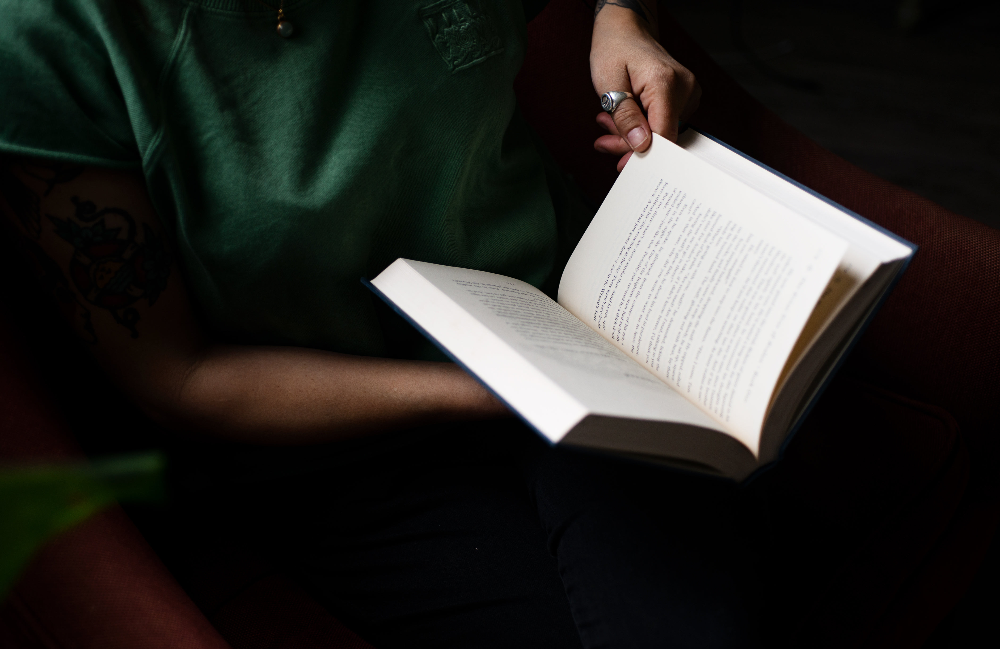

Hello my name is Emily Flores. I'm an 18 year old girl born in Cambridge and raised in Newton Massachusetts. I am a rising freshman at Mass Bay Community College majoring in their STEM program. At the moment, I am a mostly self-taught coder. however this fall I will be studying Computer Science where I will learn the fundamentals of computer science and technology. My hobbies include Coding of course, I just started the girls who code self-paced program and so far I love it I love how you can incorporate your own creativity into Self-made projects. in my free time I enjoy taking courses and watching educational videos to teach myself different coding languages. Another hobby I enjoy doing is reading reading allows me to clear my mind and gain more knowledge. My favorite genre of books include self-help books and financial literacy books. through my website you can find some of my book recommendations that truly changed my life. The last hobby that I enjoy doing is journaling and planning. Like I said I'm somebody who enjoys finding Hobbies that allow me to clear my mind set. One of which includes journaling I enjoy buying and personalizing different journals where I can write my thoughts ideas and plans. I enjoy planning my daily tasks writing down my goals and keeping track of my finances. One of my biggest goals in life at the moment is To continue my studies in college and pursue a career within the technology industry. I am fortunate enough to go to college because my parents didn't have the opportunity to do so. I will put my best efforts into my studies to make my parents proud as I walk down the aisle of graduation. Hopefully you learned some more about me , feel free to navigate through my website.
My passions

Coding
My Passion for coding started when I was in elementary school. I remeber we were given the oppurtunity to use the platform Scratch.
Reading
My passion for reading was actually recent. I gained an intrest in reading books about financial litercy and self help books.

Journaling
I enjoy journaling by keeping track of my finances and also planning future endevors through reflecctions and journal entries.